The towers were phased into operation between 1958 and 1960.
By the spring of 1955 Bethlehem
Steel had completed the first platform at its Quincy, Massachusetts facility.
The steel platform was shaped into an equilateral triangle with cropped
ends, measuring 210 feet along all three sides, providing about half an
acre of surface area. So that it would conveniently house programmed personnel
and equipment, combined with stores, reserves, and spare parts essential
for long-term stays, the platform was welded into a self contained, compartmentalized
unit 20-feet high, subdivided into separate decks. The bottom-most deck
was employed mainly for maintenance and storage space, where tanks and pumps
were located. The next deck was partitioned into living quarters, a galley
and mess hall, administrative offices, heating and air conditioning areas,
recreational areas, food storage space, a dispensary and library. Atop this,
across approximately half the wedge-shaped platform, was the helicopter
landing area. Occupying the rest of the triangle was the uppermost operations
deck, some 210 feet long by 60 feet wide, rising 12 feet above the rest
of the 20-foot high platform. Inside this deck was the surveillance and
control operations area, on top of which would be perched the three radar
antennas enveloped by pressurized arctic towers. Equipped with radars and
other gear, the platform, weighed 6,500 tons or so.7
By the end of 1955, TT-2
was assembled, with bolts tightened and the rest shipshape enough for USAF
to assume beneficial occupancy. This it did, effective 2 December 1955.
The FPS-3A and twin FPS-6 height radars, as programmed, were brought aboard
and installed. They detected targets of B-47 size, flying about 50,000 feet,
up to 200 nautical miles away. But the same targets flying at low altitudes
say 500 feet—because of line-of-sight radar characteristics, were discernible
by radar only up to 50 nautical miles away. It was for this reason, among
others, that airborne early warning and control (AEW&C) aircraft later patrolled
certain off-shore stations to cover low-altitude radar gaps over looked
by Texas Towers, picket vessels, and shore-based radars.9
Along with the radars arrived
the communications equipment, without which Texas Towers, being unable to
transmit their findings to shore, would be incapacitated. Foremost among
this equipment came the point-to-point, FRC-56 tropospheric scatter system.
Three parabolic-disk antennas, measuring 28 feet in diameter, were mounted
vertically, side by side, along the platform edge supporting the operations
deck. Two at a time were utilized for transmitting messages, while all three
combined received them. The signals were deflected from the tropospheric
layer of Earth’s atmosphere, between the 30,000 and 60,000-foot level. A
wide spectrum of ultra-high frequencies was thus exploitable without recourse
to expensive intermediate relay stations. Normally unaffected by atmospheric
disturbances, the tropospheric scatter radio system worked well in the manual
system for distances up to about 200 miles, and was intended to serve equally
as well for automated SAGE communications later to come. At either end of
the system, telephone circuits were patched in so that voice communications
could be reliably maintained.
Apart from this primary point-to-point
system, there was installed conventional BF radio equipment for tower-to-shore
backup communications, and UHF and VHF radio equipment for tower-to-air
communications. Teletype, cryptographic, telephonic intercommunications
and public-address systems were incorporated as well, together with certain
aircraft radio navigational devices. GPA-37 equipment was integrated to
facilitate weapons control operations. To power the communications, navigation
and radar equipment thus brought aboard, eleven 250 KW diesel generators
were rigged so that less than half of them, operating in unison, would supply
sufficient electricity during any given time. Air conditioning units were
furnished to prevent certain of the equipment from over-heating.10
Site P-10 (762 ACW Squadron)
at North Truro AFS, Massachusetts, was designated the parent station for
TT-2. Operational concepts governing their relationships were diligently
spelled out in a full-dress operations plan, first published by ADC in July
1954, later revised in July 1956. Other matters were carefully worked out,
such as methods for transportation and supply. Two H-21B helicopters per
tower were authorized by USAF, four of which were based at Otis AFB and
two, at Suffolk County AFB. The twin-rotor H-21B had a theoretical capacity
for carrying 10 passengers or 2,000 pounds of freight. When equipped with
necessary flotation and survival gear, however, the H-21B’s capacity was
cut to eight persons or 1,550 pounds of freight. Other cargo, particularly
POL, was furnished periodically by ship. Fuel, food and lubricants,were
stocked to provide at least a 30-day reserve; spare parts were on hand for
operational equipment to last 45 days On 7 May 1956, TT-2 achieved the status
of a limited operationally ready aircraft control and warning station. For
purposes of furnishing logistical support for TT-2, and for the others when
the need arose, the 4604 AC&W Squadron (Texas Towers) was activated 8 October,
1956 at Otis AFB, Massachusetts, which two months later (December 1956),
was re-designated the 4604th Support Squadron (Texas Towers).11
Texas Towers 3 and 4. Meanwhile,
by November 1955, bids for the next two towers had been accepted. Construction
contracts for both of them were awarded J. Rich Steers, Inc. of New York
City in collaboration with Morrison-Knudsen, Inc., of Boise, Idaho. Except
for minor changes (including longer legs and increased storage capacity
for diesel oil), these two practically duplicated the configuration and
basic arrangement of TT-2.
Because of future commitments
to integrate Texas Towers into upcoming SAGE centers during the late 1950’s,
ADC picked TT-3 at Nantucket Shoal, and TT-4 at Unnamed Shoal, for its next
two towers. This left only TT-1 (Cashes Ledge) and TT-5 (Brown’s Bank) unaccounted
for. USAF, for purposes of economizing, was anxious to rid the program of
them both.
At first, ADC resisted all
attempts in this direction. Then, in late 1956, because of the promise of
increased off-shore radar coverage by coastal AC&W squadrons in the vicinity,
where TT-1 and TT-5 were scheduled to go, ADC agreed to drop TT-1 and TT-5
from all further consideration, leaving three towers, TT-2,TT-3 and TT-4,
in the program.12
In 1956 and 1957, work proceeded
on TT-3 and 4. Platform and legs of TT-3 were readied by mid-1956, launched
the night of 7 August 1956, and towed to Nantucket Shoal and erected that
same month. On 29 November 1956, ADC assumed beneficial occupancy. Next
month the superstructure and main supports of TT-4 were under construction
at South Portland, Maine. These were completed by mid-1957, then, starting
28 June 1957, were towed to sea and placed at Unnamed Shoal. ADC gained
beneficial occupancy in November 1957.
The New Life. During these
same years (1956-1957), personnel serving at TT‑2 — then functioning manually
on a limited operational status—were learning of peculiarities uniquely
associated with Texas Tower duty. For one thing, the metal superstructure
seemed to vibrate constantly. As the FPS-20A long-range radar antenna (converted
from the original FPS-3A model), continued unceasingly to spin (except when
out of commission for maintenance), the diesel generators, to grind out
their power, and the other equipment, to crank away at their appointed tasks,
TT-2 rattled vibrantly from the ordeal. Standing like a three-pronged tuning
fork, the tower resonated with noises that spread farther, and amplified
greater, than initially occasioned by their source. Matters were not improved
when, every half-minute or so during the frequent fogs, the dismal-sounding
foghorn croaked out its forlorn message.
Still worse, since it affected operations, was the phenomenon of temperature inversion suffered mostly in summertime. This caused loss of radar coverage, creating, in certain instances, permanent echoes that obscured or distorted radarscope reception. On occasion, equipment components generated electromagnetic disturbances that interfered with, or disrupted, operations of other electronics apparatus. Notwithstanding these and other shortcomings, tower crews became inured to those problems not susceptible of change. And TT-2, effective 17 April 1958, became fully operational manually, then in September 1958, operational as a SAGE unit. TT-3 followed suit in October 1958. TT-4, in mid-April 1959, was declared manually operational, and in April 1960, SAGE operational. Cost of the towers, including platform, legs, radars and communications equipment was reckoned at around $13 million each, and with operating expenses figuring about $1.5 million annually thereafter. TT-3 reported to, and comprised an annex of the 773rd AC&-W Squadron (Montauk, New York); TT-4, the 646th AC&W Squadron (Highlands, New Jersey).13
Texas Tower #2
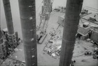 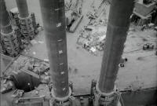 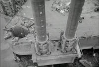 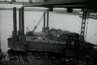 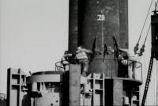 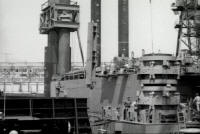 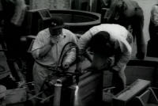 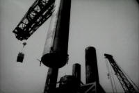 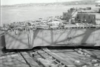 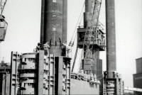 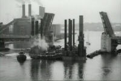 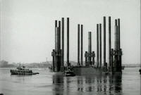 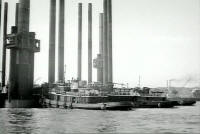 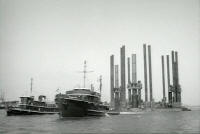 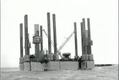 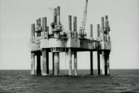 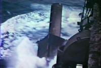 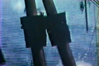 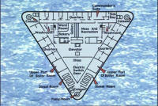
Texas Tower #3
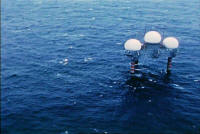
Texas Tower #4
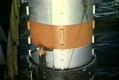 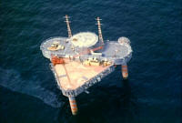 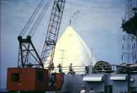 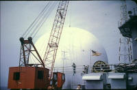
The Texas Towers in the waters off New England. With 50 KW-CW, 900 MHz power amplifiers for tropospheric scatter communications, the Texas Towers were a product of the 1950s and a building block for UHF television. Credit: Photo courtesy of Doc Ewen.
The Texas Towers 10 KW UHF power amplifier. The name on the Texas Tower transmitter is National-Ewen Knight. Ewen Knight built the first high power transmitters for Lincoln Lab. Credit: Photo courtesy of Doc Ewen.
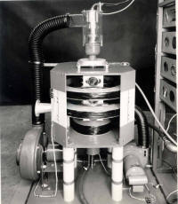
{kind=link}
{kind=link}
{kind=link}
{kind=link}
{kind=link}
{kind=link}
{kind=link}
{kind=link}
{kind=link}
{kind=link}
{kind=link}
{kind=link}
{kind=link}
{kind=link}
{kind=link}
{kind=link}
{kind=link}
{kind=link}
{kind=link}
{kind=link}
{kind=link}
{kind=link}
{kind=link}
{kind=link}
{kind=link}
{kind=link}